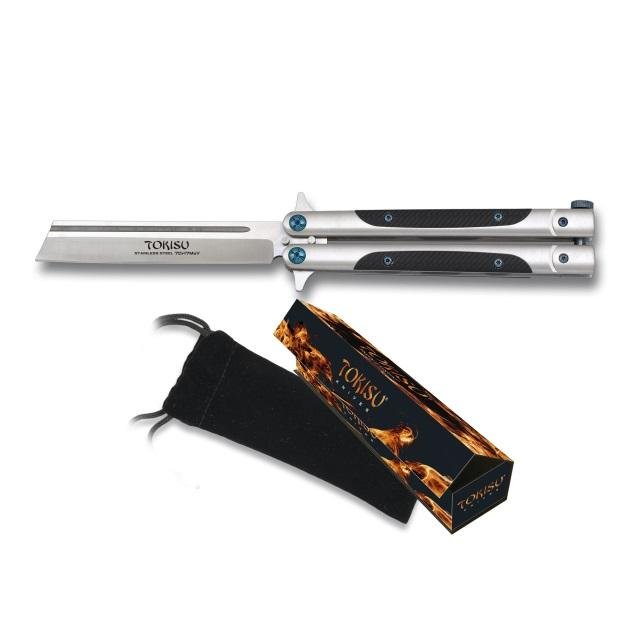

Con este artículo queremos que conozcas, el origen, la utilidad, los tipos entre otra serie de aspectos que hacen de la navaja mariposa o de abanico un arma bastante buscada por quienes practican artes marciales. Sin duda, quedarás encantado/a por la practicidad de este implemento.
Estas navajas se diferencian de los cuchillos, debido a que poseen una hoja delgada y afilada que se guardan entre dos asas,Estas navajas también son conocidas como “cuchillo roto” o “Balisong”, palabra compuesta: “bali” que significa romper y “sung” interpretado como cuerno (de animales). Sin embargo, algunos filipinos residenciados en Estados Unidos redefinieron la palabra, por lo cual bali seguía con el significado de romper pero “song” era canción en inglés, esto debido al sonido característico que hace la navaja,La navaja mariposa nace en el pueblo ubicado en la provincia de Batangas (Manila), y funciona como un arma de defensa personal debido a su efectividad; es por ello que son conocidas en casi todas partes del mundo. Su característica principal es que posee una agarradera, la cual se encuentra separada en dos. Esto hace crear la impresión, al momento de ser guardada, de un abanico (de ahí deriva su nombre) que rápidamente puede desdoblarse y pasar a develar una filosa punta.
No existe hasta el momento una historia certera acerca del origen de la navaja mariposa o de abanico, sin embargo muchos estudios ratifican la postura de que era un armamento comúnmente usado por los filipinos,La navaja también es conocida como “29” debido a un mito filipino que relata la historia de un guerrero que luchó contra 29 adversarios haciendo uso de este utensilio,Otra versión del origen de la navaja mariposa sostiene que data del año 1905 y que fue creada en el taller de Perfecto León, en Balisong (Filipinas),Con el pasar del tiempo la navaja fue llevada fuera de las fronteras filipinas para darse a conocer en Estados Unidos, lugar donde hizo famosa. Se piensa que las navajas mariposas llegaron al continente americano luego de la segunda guerra mundial, como parte de los implementos que eran traídos por militares e inmigrantes. Es así como a finales del año 1970 inició la fabricación de esta herramienta de combate de forma masiva, la cual se proliferó en diversas marcas, expendidas en una variedad de países.
Se dice que esta navaja posee tres sentidos, que manifiestan diversos mensajes de acuerdo a la posición y la apertura de la navaja. El primero simboliza una señal al cielo, al agua y a la tierra, dando la forma de un triángulo. El segundo sentido, se da cuando ésta se encuentra cerrada, la cual representa el sosiego “tres en uno por la paz”. Finalmente, el tercero, es cuando la navaja de abanico se abre totalmente y encarna la posición de defensa, acá cambia el significado a “tres en uno por la lucha”.
Los tipos de navajas en verdad no se encuentran estandarizados varían de acuerdo al fabricante, es por eso que se pueden encontrar un sin número de ejemplares pero su esencia es la misma. los tipos más comunes son:
Navaja de un filo: Los trucos con esta navaja se consideran un poco complicados, dependerá de la habilidad para desdoblarla que desarrolle quien la maneje.
Esta navaja es comúnmente empleada durante el inicio de la práctica, sin embargo se le sugiere al practicante que comience su aprendizaje con una navaja sin el filo o con una poco de cinta adhesiva que sirva para evitar heridas a causa de cortes.
Navaja de doble filo Estas navajas están diseñadas para quienes ya tienen un mejor dominio del arma, debido a su nivel de peligrosidad. Para lograr un buen manejo de la navaja de doble filo se requiere de una práctica constante con el objetivo de ejecutar técnicas de manera veloz.
FABRICACIÓN Originariamente la elaboración de estas navajas se hacía de una forma bastante artesanal, estaban fabricadas a mano y era considerado como un oficio que debía transmitirse de generación en generación. En la actualidad, debido a todos los procesos de industrialización, la navaja mariposa es fabricada por máquinas y se ha pluralizado los estilos, formas y materiales,En un principio, en Filipinas, las hojas de las navajas tradicionales eran realizadas de acero proveniente de rieles de tren, y otras de los amortiguadores de vehículos. Es decir eran construidas con material reciclado. Existen dos formas de fabricación de las navajas mariposas, una es la construcción en sándwich y la otra de canal. La primera se amalgama en capas -lugar de descanso del cuchillo- que son fijadas y atornilladas entre sí en la mayoría de las ocasiones. En cuanto al segundo tipo de fabricación, se caracteriza por poseer un mango con una hendidura, aspecto por el cual aumenta su resistencia a diferencia de la construcción de sándwich,Actualmente el país con mayor producción de navajas mariposas o de abanico es EEUU. Sin embargo tanto Japón y Filipinas (país de origen) llevan la batuta al considerarse los mejores productores de navajas, debido a la calidad del producto
Conocemos que estas armas pueden servir también como herramientas en múltiples tareas y actividades cotidianas. Sin embargo, en caso de las artes marciales muchas son las utilidades de la navaja mariposa o de abanico. En las artes marciales se añade el empleo de esta arma dentro de los entrenamientos, con el fin de que los aprendices tengan la posibilidad de unir las técnicas de defensa personal con el uso de esta navaja,En caso del Kali Eskrima, arte marcial filipino, las navajas mariposa son usadas con frecuencia. Parte de los beneficios que aporta la práctica con esta arma es que fortalece el puño, y en cuanto a su utilidad, como dato curioso, se puede aportar que estando cerrada es aplicada para golpes y puntos de presión, sin causar un daño letal.